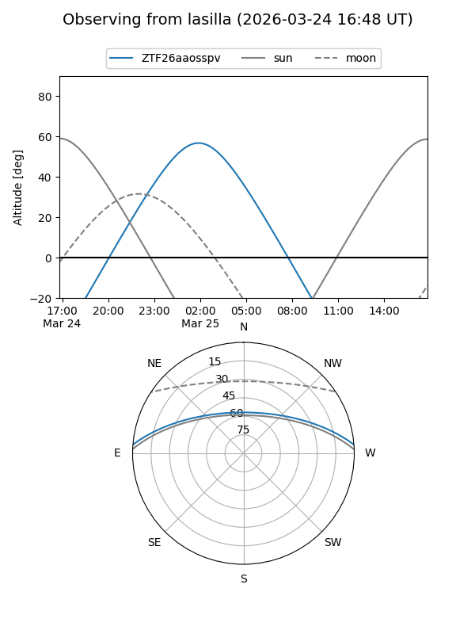
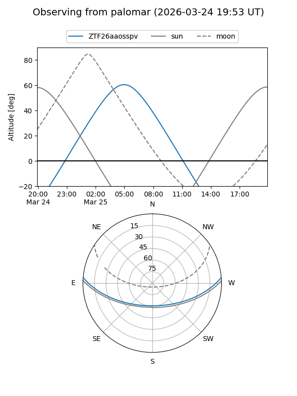

ZTF26aaosspv
Target ZTF26aaosspv at 2026-03-25 08:27
Aliases and brokers:
FINK: link
Lasair: link
ALeRCE: link
alt names
ZTF26aaosspv (ztf,fink_ztf)
Coordinates:
equatorial (ra, dec) = 139.8317,+4.02725
equatorial (HMS+DMS) = 09:19:19.60,+04:01:38.11
galactic (l, b) = (227.7652,+34.46936)
Flags:
Photometry:
last ztfg=17.71
1 ztfg detections
Lightcurve
Visibility


Additional plots